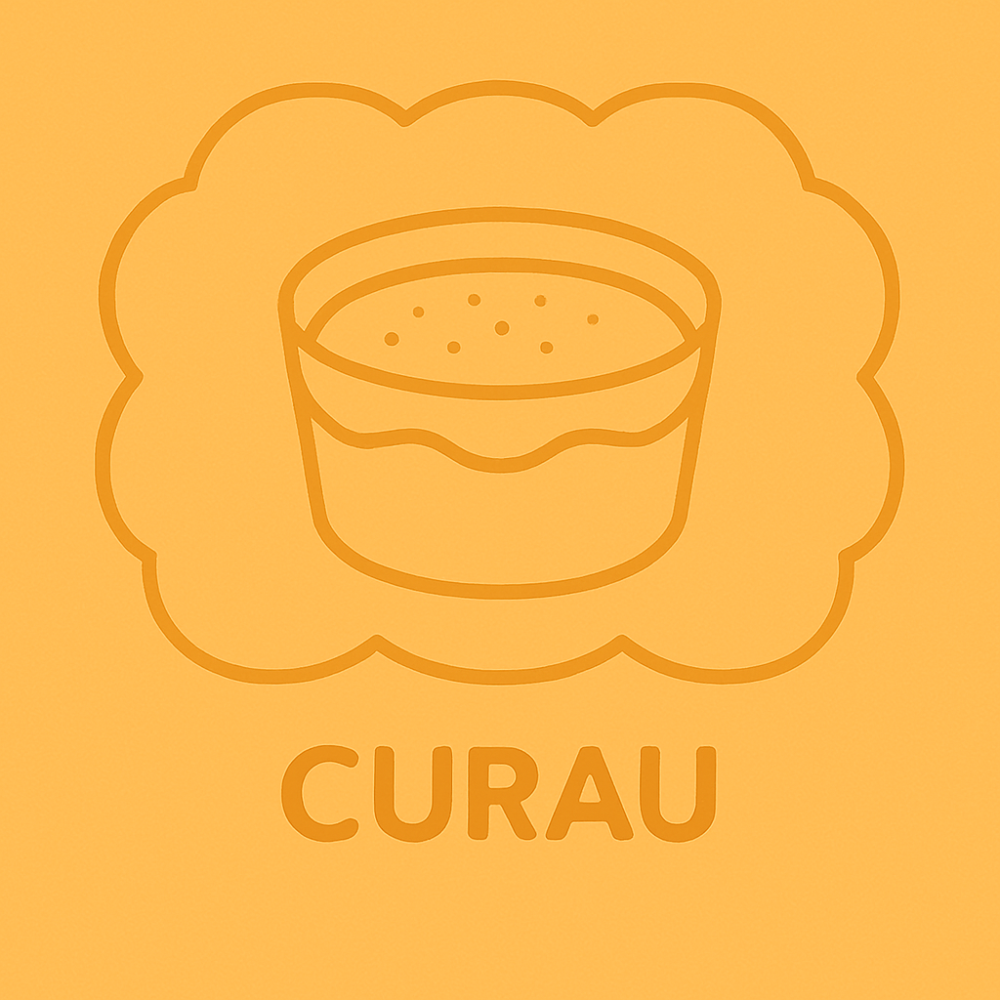

ingredientes
curau
6 espigas de milho
2 colheres (sopa) de açúcar
canela em pó a gosto
1L de leite
1 lata de leite condensado
modo de preparo
Tire o milho da espiga.
Bata o milho com o leite no liquidificador ou mixer.
Peneire a mistura já batida.
Leve a mistura peneirada ao fogo médio mexendo sem parar até começar a ferver.
Tire do fogo e adicione o leite condensado e o açúcar.
Volte ao fogo médio até ferver.
Ao ferver mude para fogo baixo e espere 5 minutos para engrossar mais.
Separe em vasilhas e polvilhe a canela a gosto.
Leve à geladeira para esfriar.
voltar